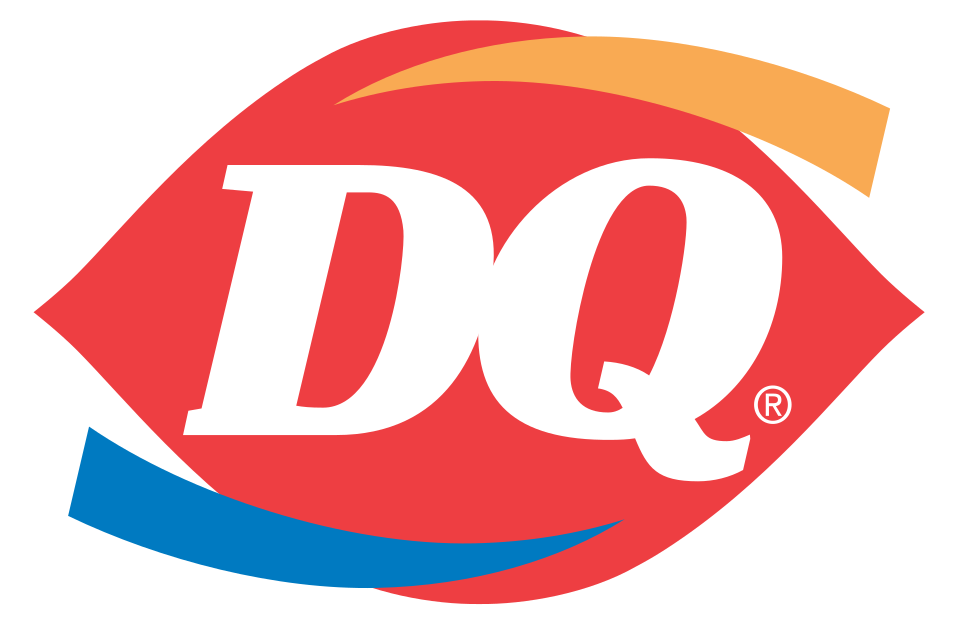

데어리 퀸 Dairy Queen
데어리 퀸(Dairy Queen)은 1940년에 설립된 미국의 다국적 패스트푸드 레스토랑 체인이다. 소프트서브 등 냉동 유제품과 함께 조리 음식과 튀김 음식을 판매한다.
최종 업데이트

데어리 퀸은 어떤 브랜드인가
데어리 퀸은 미국의 다국적 패스트푸드 레스토랑 체인으로, 약칭은 DQ이다. 매장에 따라 메뉴가 다르며, 냉동 디저트 중심의 간소한 매장부터 조리 음식을 함께 파는 매장까지 있다.
대부분의 매장은 따뜻한 음식도 팔고 연중 운영한다. 모든 매장에는 데어리 퀸 로고가 붙고 대표 메뉴인 소프트서브를 판매한다.
1940년부터 가맹 방식으로 사업을 확장해 왔다. 1950년대와 1960년대에는 미국 중서부와 남부 소도시의 사교 생활에 자리 잡았고, 여러 소설과 회고록에 등장했다.
1998년부터 버크셔 해서웨이가 소유하고 있다.
데어리 퀸은 어떻게 시작되고 성장했나
소프트서브 제조법은 1938년 John Fremont 'J. F.' McCullough와 아들 Alex가 처음 개발했다.
이들은 단골 친구인 Sherb Noble을 설득해 일리노이주 칸카키의 아이스크림 가게에서 이 제품을 팔게 했고, Noble은 판매 첫날 두 시간 만에 1,600인분이 넘게 팔았다. Noble과 McCullough 부자는 1940년 6월 22일 일리노이주 졸리엣에 첫 데어리 퀸 매장을 열었다.
매장 수는 1941년 열 곳에서 1947년 100곳, 1950년 1,446곳, 1955년 2,600곳으로 늘었다. 1962년에 회사명이 International Dairy Queen, Inc.가 되었다.
데어리 퀸의 브랜드 아이덴티티는 무엇인가
소프트서브와 숯불 방식의 Brazier 메뉴, 붉은 맨사드 지붕을 갖춘 가맹 체인으로, 미국 소도시의 생활과 오래 연결되어 온 브랜드이다.
데어리 퀸의 대표 제품과 서비스는 무엇인가
기본 제품은 매장마다 다른 냉동 유제품이며, 모든 매장이 대표 소프트서브를 취급한다. 경쟁을 위해 많은 점주가 햄버거, 핫도그, 감자튀김을 메뉴에 추가했다.
1958년 조지아에서 도입된 Brazier 방식은 구운 햄버거와 핫도그를 내세웠고 이후 전국 표준 메뉴가 되었다. Brazier 매장은 확장된 음식 메뉴와 붉은 맨사드 지붕으로 알아볼 수 있다.
'Limited Brazier' 매장은 핫도그와 바비큐 소고기(또는 돼지고기) 샌드위치를 추가로 팔며, 일부는 감자튀김과 치킨도 판다.
데어리 퀸은 지금 어떤 상태인가
International Dairy Queen, Inc.는 1987년 Orange Julius 체인을 인수했고, 1998년 버크셔 해서웨이에 인수되었다. 2014년 말 기준으로 27개국에 6,400개가 넘는 매장이 있었고, 미국과 캐나다 밖에도 1,400개가 넘는 매장이 있었다.
미국에서 매장이 가장 많은 주는 텍사스이며, 세계에서 가장 큰 매장은 사우디아라비아 리야드에 있다.
데어리 퀸 로고는 어떻게 변해왔나
자주 묻는 질문
데어리 퀸는 어느 나라 브랜드인가요?
데어리 퀸는 미국의 식음료 브랜드입니다.
데어리 퀸는 언제 설립되었나요?
데어리 퀸는 1940년 설립되었습니다.
데어리 퀸의 브랜드 아이덴티티는 무엇인가요?
소프트서브와 숯불 방식의 Brazier 메뉴, 붉은 맨사드 지붕을 갖춘 가맹 체인으로, 미국 소도시의 생활과 오래 연결되어 온 브랜드이다.
데어리 퀸는 어느 기업이 소유하고 있나요?
International Dairy Queen, Inc.는 1987년 Orange Julius 체인을 인수했고, 1998년 버크셔 해서웨이에 인수되었다.
데어리 퀸의 본사는 어디에 있나요?
데어리 퀸의 본사는 이다이나에 있습니다(위키데이터 기준).
데어리 퀸의 공식 웹사이트는 어디인가요?
데어리 퀸의 공식 웹사이트는 https://www.dairyqueen.com/ 입니다.
출처와 검증
데어리 퀸 관련 참고: 공식 웹사이트 · 위키데이터 Q1141226 · 한국어 위키백과 · 영어 위키백과. 브랜드명은 한글과 원어를 함께 표기하되 데이터에 없는 표기는 만들지 않습니다. 기원 국가·설립연도는 검수된 정의문에서 확인된 값을 우선하고, 없을 때만 공식 웹사이트 URL이 일치하는 위키데이터 개체의 값을 씁니다. 웹 첫 보관은 인터넷 아카이브가 공식 사이트 첫 화면을 처음 보관한 날로, 사이트 개설일과 다를 수 있습니다. 위키데이터 값은 2026-11-07 기준입니다.